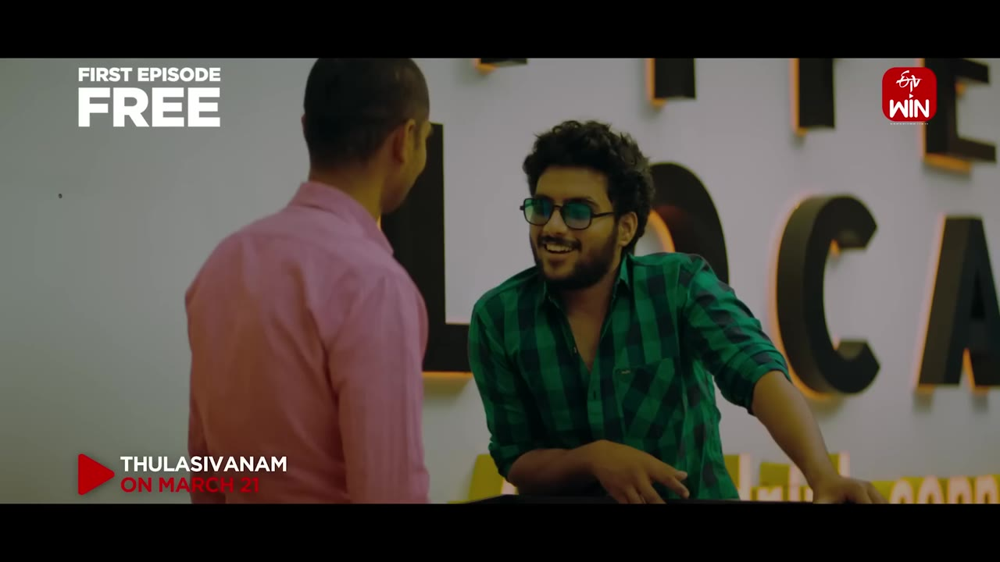
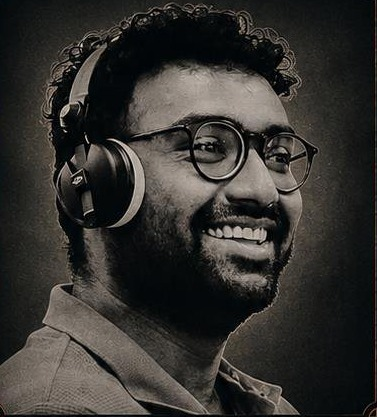

FILMMAKER & STORYTELLER
HYDERABAD, INDIA TELUGU CINEMA & BEYOND
ANIL REDDY
Writer. Director. Producer.
Stories, from instinct to screen.
Rooted in Telugu cinema.
Thinking beyond the frame.

SELECTED WORK / 2024ThulasivanamWatch the trailer ↗
01 / A LITTLE ABOUT ME
An architectural eye.
An editor’s rhythm.
A storyteller’s instinct.
I’m Anil, a writer, director and editor working across Telugu features, original series, advertising and corporate films.
Architecture taught me to think in spaces. Editing taught me to think in cuts. Filmmaking brings the two together: building worlds, shaping performances and finding the story that connects.
My experience
“I see cinema as a living conversation between art and audience.”FROM MY PROFESSIONAL STATEMENT
THE NEXT CHAPTER
Good stories.
Wider possibilities.
I’m interested in content development and acquisitions teams building original IP, empowering talent and bringing culturally rooted stories to wider audiences.
What I bring to an OTT team